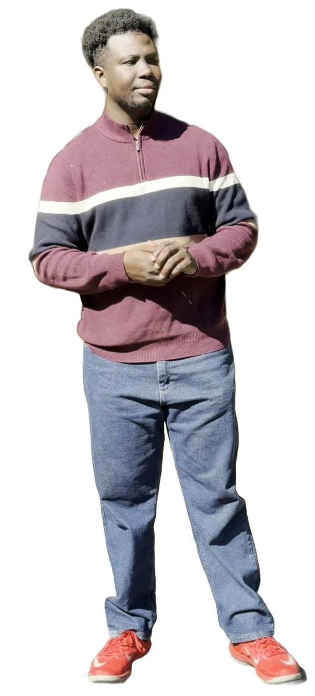

STUDIO PASSAmanorsac Studio
STEPHEN AMANOR SACKEY
Producer · Mix engineer · App developer
- ID
- AS-0001
- From
- Accra
- Base
- Virginia

Stephen Amanor Sackey
Mix engineer, app developer, session pianist and music director, building custom apps for organizations. Accra to Virginia, by way of a lot of Sundays.
01 About
I started in Accra, playing keyboard and directing music for churches and a live band. Somewhere in there I found the work I cared about most: helping young, independent artists get their songs out of their heads and into the world.
That grew into worship records, live album productions and first releases with artists like Kingsley Anyenor.
These days I direct music at a multicultural congregation in Virginia and run its broadcast mix myself, while finishing a master’s in Commercial Music Performance at Liberty University.
The software came out of frustration. Rehearsals kept burning time on parts people could have learned at home, and every app I used was missing the one feature I actually needed. So I built my own: simple to pick up, quick to learn, with everything in one place. More are on the way.
Producer · Mix engineer · App developer
02 Craft
Everything I do, in four families. Point at a tile to see it, or pick a family to light it up.
03 Work
The records first, then the software that came out of making them.
04 Custom software
Through CTSD, Custom Technology & Software Development: websites, mobile applications and business systems designed around the way an organization actually works.
For businesses, churches, schools and nonprofits, with an admin your own team can run without calling a developer.
The demo needs no login. Click around freely.
05 Services
Eight ways in. Pick one and the form at the bottom of the page is ready for it.
06 Journey
Playing keyboard and directing music for churches and a live band.
Worship records, live album productions and first releases with artists like Kingsley Anyenor.
Directing the music at a multicultural congregation, and running its broadcast mix myself.
Liberty University.
In progressApps and plug-ins built for the same work: simple to pick up, quick to learn, with everything in one place.
Released and countingWebsites, mobile apps and business systems for businesses, churches, schools and nonprofits, built around the way each one works.
Visit CTSD ↗07 Moments
Built for rehearsals, services and the mix, and sold on this site.
Music director and broadcast mix for a multicultural congregation in Virginia.
The same work in two rooms, and remote sessions anywhere in between.
First releases with artists like Kingsley Anyenor, and live album productions.
08 Gallery
09 Contact
Tell me what it should feel like and I will tell you what it needs.